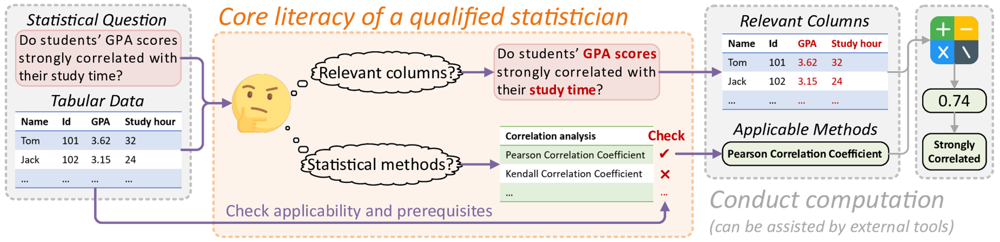

Large Language Models (LLMs) have demonstrated impressive capabilities across a range of scientific tasks including mathematics, physics, and chemistry. Despite their successes, the effectiveness of LLMs in handling complex statistical tasks remains systematically under-explored. To bridge this gap, we introduce StatQA, a new benchmark designed for statistical analysis tasks. StatQA comprises 11,623 examples tailored to evaluate LLMs' proficiency in specialized statistical tasks and their applicability assessment capabilities, particularly for hypothesis testing methods.
We systematically experiment with representative LLMs using various prompting strategies and show that even state-of-the-art models such as GPT-4o achieve a best performance of only 64.83%, indicating significant room for improvement. Notably, while open-source LLMs (e.g. LLaMA-3) show limited capability, those fine-tuned ones exhibit marked improvements, outperforming all in-context learning-based methods (e.g. GPT-4o).Moreover, our comparative human experiments highlight a striking contrast in error types between LLMs and humans: LLMs primarily make applicability errors, whereas humans mostly make statistical task confusion errors. This divergence highlights distinct areas of proficiency and deficiency, suggesting that combining LLM and human expertise could lead to complementary strengths, inviting further investigation into their collaborative potential.
Our contributions are summarized as follows:


If you find our work useful or inspiring, please kindly cite:
@misc{zhu2024large,
title={Are Large Language Models Good Statisticians?},
author={Yizhang Zhu and Shiyin Du and Boyan Li and Yuyu Luo and Nan Tang},
year={2024},
eprint={2406.07815},
archivePrefix={arXiv},
primaryClass={cs.CL}
}